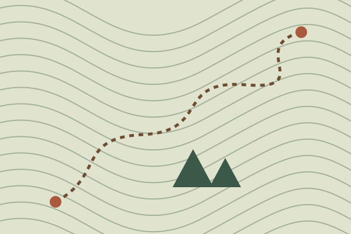
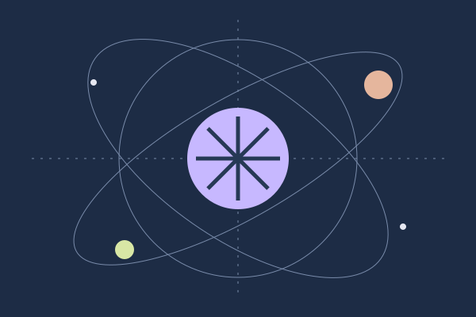

life / 6 min read
On taking the long way
A small case for wandering, paying attention, and arriving a little later.
18 September 2026Life, side quests, and ideas that won’t leave me alone. A notebook by Santiago Mooser.
Start with the latest essay ↗
FOLLOW YOUR CURIOSITY ↗
A small case for wandering, paying attention, and arriving a little later.
18 September 2026
Not every project needs a business plan. Some just need an afternoon.
10 September 2026
Keeping a thought around long enough to see what it might become.
02 September 2026